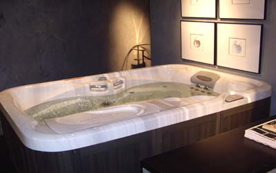

自來水安全
水化學式H2O，它水是我們人類維持最重要的元素，因此飲用水衛生對我們而言是非常重要，以台北市而言是使用翡翠水庫的水源,其水質可說相當良好，以陽明山之水，因地處溫泉區，因此石灰質較多，比較偏於硬水(鈉離子及鉀離子較多，因此容易產生水垢及影響洗滌之能力)，飲用水之PH值應界於6.5-8.5，每個地區水之酸鹼質因地質氣候有異。
飲用水中的污染物可分為三大類，即生物性、物理性、化學性污染物。生物性污染物包括細菌、病毒、寄生蟲、原虫，物理性污染物主要是懸浮物，化學性污染物則是有機和無機化合物，這部份是自來水的工作項目，但處理原水後所產生之附加物則是多數人不了解的。
總溶解固體量500mg/L以下，代表溶解礦物質含量低。
濁度需再2.0 NYU 以下(大於則代表進水過濾靜置不足或水池水塔未清洗可能性高)。
氨氮則不得檢出(檢驗是否有糞便污染)，大腸桿菌也必須為陰性。

飲用水致癌物
目前絕大多數國家之自來水裡，會加入氯消毒，因它能抑制水中細菌的生長，但是它與與水中氨氮有機物混合後(如菌類、腐葉...)，容易衍生三鹵甲烷，它是(CHCl3（氯仿）、CHBrCl2（一溴二氯甲烷）、CHBr2Cl（二溴一氯甲烷）、CHBr3（溴仿）等稱總三鹵甲烷，很多三鹵甲烷在工業上被用作溶劑或制冷劑，有肝毒、腎毒更為致癌物，每個人對毒物的致死量都不同，因此在毒物學有LD50 半數致死量此指標，在水的口服中，其中LD50是90,000mg/kg為基準，但它僅在於急性之毒物致死量，由此來推算上述毒物自人的一生中，以平均壽命兒言能夠接受劑量，但重點是每個人致毒性之接受量都不一定，除口服量外還有淋浴時間...等等變數，而在我們周遭還有其它因飲食或空氣之毒物所影響，它會有加倍相乘之比例致癌因子，台灣自來水之餘氯介於0.02ppm-0.08ppm，每增加0.1ppm，就會增加30%以上致癌因子率。
除了口服飲食外，淋浴、游泳等接觸也可能經由空氣、皮膚暴露吸收，因此燒開水或煮食時，應該打開抽油煙機，使其排到戶外，降低吸入毒氣的機率，在淋浴時也記得不要太久，以防吸入過多的毒氣。